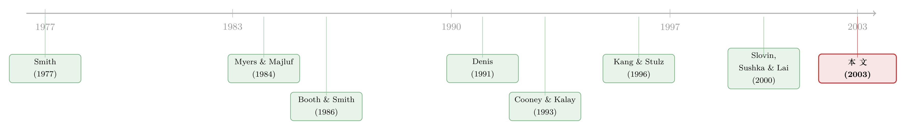

承销商替你做了一道「卖出期权」的算术——日本增发为何不跌反涨
本文读的是 Cooney, Kato & Schallheim (2003, Review of Financial Studies)：在美国，公司宣布增发股票，股价平均要跌；可在日本，同样一则增发公告，股价平均却不跌反涨。作者把这反常的一幕，归到一个被美国市场结构掩盖掉的角色身上——承销商。在日本，承销商要在定好的发行价上替发行人「扛」上一两个星期的市场风险，这相当于免费卖给市场一份「卖出期权（put）」。作者于是把这份风险显式地算成一个 put，并发现：put 越值钱，增发公告的正向反应越大；而当一种风险更低的发行方式（formula-price）出现后，公告效应也随之显著变弱。一份期权的价值，量出了一次「认证」的含金量。
1 一个反常的开场
先说一件几乎被写进每一本公司金融教科书的「定律」：一家美国公司宣布要增发股票（seasoned equity offering, SEO），它的股价在公告日附近平均是下跌的。这件事被反复验证过——Asquith and Mullins (1986)、Masulis and Korwar (1986)、Mikkelson and Partch (1986) 一连串经典实证，都指向同一个负号。逻辑也很顺：按 Myers and Majluf (1984) 的逆向选择，老板只在自家股票被高估时才愿意发新股，所以「发股」本身就是一个坏消息，市场理性地往下调价。
可是，如果你把同一台事件研究的机器搬到东京去，会看到一件让人愣住的事：在日本，增发公告日附近的平均股价反应是正的——至少是非负的。这不是某一年某几家公司的偶然，Kato and Schallheim (1993b) 和 Kang and Stulz (1996) 都看到了这个正号。
于是一个尖锐的问题摆在桌面上：同样是「发股票」，凭什么在大洋两岸，市场给出了符号完全相反的判决？
这篇论文要回答的，正是这个问题。而它给出的答案，没有诉诸什么玄妙的「东方文化」，而是落在一个非常具体、可以被定价的制度细节上。
2 三条岔路，作者只走第二条
面对这个反差，能想到的解释大致有三条岔路：(1) 承销制度本身不同；(2) 发股的公司类型不同；(3) 大环境（市场状况）不同。
Kang and Stulz (1996) 走的是第二、三条：他们认为日本小公司的管理层动机和美国不一样，对大公司而言，公告效应其实也是负的。换句话说，他们把正号归给了「谁在发股」。
本文的三位作者偏要去走第一条岔路——承销过程（underwriting process）的制度差异。他们想说：日本增发公告之所以是好消息，是因为日本的承销商在这套流程里扮演了一个美国承销商扮演不了的角色，即对发行公司价值的「认证（certification）」。
要理解这一点，得先看清美日两套发行流程在时间轴上的一个关键差别。
3 关键的制度细节：被「定」住的发行价
Altinkilic and Hansen (2000) 把承销商在 firm-commitment（包销）发行里的功能拆成四块：认证、监督、营销、承担风险。本文要放大的是第一块和第四块，而放大它们的，恰恰是日本流程里一个看似枯燥的时间安排。
在美国，发行价通常是在股票卖给投资者之前不到 24 小时才定下来的——Smith (1977) 早就指出，那份写明发行价、对承销商有约束力的协议，往往在登记生效前 24 小时内才签字。承销商「扛风险」的窗口短到几乎可以忽略。
日本不是这样。在本文样本里，固定价格（fixed-price）方式下，发行价是在认购期结束之前平均 7.2 个交易日（9.6 个日历日）就公告出来的，而且定在一个显著低于当前市值的折价上（1983 年后平均折价约 3.5%）。这意味着：从定价的那一刻起，承销商就站在了一段一两个星期的悬崖边上——只要这段时间里股价跌破发行价，承销商作为包销方就要自己吞下亏损。
一句话抓住全文的支点：美国承销商几乎不承担「定价到卖出」之间的价格风险，日本承销商要扛上一两周。 正是这段被「定」住的时间，把承销商从一个走过场的中介，变成了一个用真金白银替发行人背书的「认证者」。
到这里，叙事的张力就转化成了一个可以建模的对象。一个自然的问题是：这份「扛风险」，到底值多少钱？
4 把承销商的风险，写成一份「卖出期权」
作者的核心一招，是把承销商承担的这份风险，显式地写成一个空头卖出期权（short put option）的头寸。
直觉是这样的：包销协议一旦签下，承销商就承诺以发行价把股票卖出去。如果到期（认购期结束）时股价高于发行价，皆大欢喜，承销商的这份「保险」一文不值；可一旦股价跌破发行价，承销商就得照单全收——这正是卖出一份 put 的损益形状。于是：
- 期权的行权价（exercise price）＝折价后的发行价
K； - 期权的到期时间（time to expiration）＝从定价日到认购期结束的那段时间
T； - 标的＝发行公司的股票，现价
S。
这一招的妙处在于：它把四个本来零散的因素——股价、折价幅度、承销商暴露的时间、股票波动率——全部压缩进了一个数，即这份 put 的价值。折价越小（K 越高、越贴近市价），put 越值钱；承销商扛的时间越长、股票越波动，put 也越值钱。
而 put 越值钱，意味着承销商敢于签下这份协议所传递的信息含量就越高。为什么？因为承销商不是慈善家：日本的承销费是按发行总额固定收取的（样本里 1990 年 1 月前是 3.5%，之后到 1994 年 2 月是 3%），它不会因为多扛了风险而多拿一分钱。所以一个理性的承销商，只会在它判断「这只股票的内在价值不低于发行价」时，才肯签下这份会让自己短一份 put 的协议。它的「签字」本身，就把发行公司股票价值的分布在发行价处截断了——或者至少压低了股价低于发行价的概率。市场看懂了这层意思，于是把股价向上修正。增发公告，就这样从坏消息变成了好消息。
这就是「承销认证假说」的内核。它和私募配售（private placement）的逻辑是一脉相承的：管理层无法对公众无成本地披露私有信息（Myers and Majluf, 1984; Cooney and Kalay, 1993），但可以把它透露给一个大投资者——在私募里是认购的机构，在这里就是承销商。Hertzel and Smith (1993) 正是用这个逻辑解释了私募增发的正向市场反应。承销商，扮演的就是那个替全体散户「看过账本」并愿意用资本背书的大投资者。
5 模型：那份 put 到底怎么算
作者沿用 Black and Scholes 的框架给这份 put 定价。设股票现价为 S、折价后的发行价（行权价）为 K、无风险利率 r、年化波动率 σ、承销商暴露的时间 T，则这份卖出期权的价值为标准的 Black-Scholes put：
$$ P = K e^{-rT} N(-d_2) - S\, N(-d_1) $$
其中
$$ d_1 = \frac{\ln(S/K) + \left(r + \tfrac{1}{2}\sigma^2\right)T}{\sigma\sqrt{T}}, \qquad d_2 = d_1 - \sigma\sqrt{T}. $$
把它逐项读一遍，就能看清是什么在驱动「认证的含金量」：
这里有一个作者自己点明的、很诚实的张力：承销认证的根源是信息不对称，而这恰恰违背了 Black-Scholes 模型的假设。 所以这份 put 的价值未必能捕捉承销商承担的全部风险（比如它若做价格稳定操作，还要额外扛进货的风险）。换句话说，作者并不是把 BS 当成「真理」，而是把它当成一把统一的尺子，用来把「折价、时间、波动」这几件事折算成一个可比的数字。
接着，一个更巧妙的设计登场了。
5.1 formula-price：一份「可能不存在」的卖出期权
1983 年 12 月，日本引入了一种新的发行方式——公式价格法（formula-price method），NEC 是第一家。它和固定价格法有两点关键不同：
- 暴露时间更短：发行价定得离认购期结束更近，样本里平均只有
4.0个交易日（5.4个日历日），远短于固定价格法的7.2个交易日； - 带自动取消条款：公式法预设一个「最低发行价」，定在当前股价下方
15%处；一旦按公式算出的发行价跌破这条线，整笔发行自动取消。固定价格法没有这道阀门。
这两点意味着承销商扛的风险更小，认证的含金量也应该更低。怎么把这件事写进模型？作者把公式法的风险写成一份「或有」卖出期权（contingent put）：它在发行照常进行时，和固定价格的 put 一模一样；但只要触发取消，这份 put 就凭空消失。于是要对标准 BS 公式做一个修正，乘上「发行不被取消」的概率。结果是，公式法这份 put 的价值-股价比，大约只有固定价格法的 60%。
模型的预测因此非常干净：如果正向公告效应真的来自承销认证，那么认证更弱的 formula-price 发行，公告日股价反应应该显著弱于 fixed-price 发行。 这是一个可以直接拿数据检验的、几乎是「实验」级别的对照——同一个市场、同一批承销商、同一种逆向选择，只是换了一种把风险调低的发行技术。
6 数据与三个落地的发现
数据来自东京证券交易所（TSE）一部上市公司在 1974 年 1 月至 1993 年 3 月间的全部公开增发，发行信息（公司名、公告与发行日、折价、发行价）取自历年的 Commercial Law Review。剔除同时做配股/拆股/送股的、会计数据缺失的、以及「standby」方式（仅 20 笔）之后，剩下 703 笔包销（firm-commitment）发行；再因股票收益数据缺失损失 69 笔（多为 1970 年代发行），并要求股票在事件窗内有足够的交易天数，又剔除了一批。
在这套样本上，作者报告了三个层层递进的发现：
其一，公告期收益显著为正。 这印证了市场认为「承销商认证的发行价低于股票内在价值」——好消息。
其二，put 的价值与公告收益正相关，且统计显著。 这是全文的命门：不是笼统地说「日本和美国不一样」，而是在日本市场内部，把每一笔发行的认证含金量量化成 put 值，再看它能不能解释公告反应的横截面差异。答案是能。承销商扛的风险越大，市场给的「好消息」越大。这一步，把一个国别差异的故事，落实成了一条可检验的、单调的定价关系。（顺带一提，Singh (1997) 在美国包销配股里也发现折价与公告效应正相关，逻辑同源。）
其三，formula-price 发行的公告反应显著低于 fixed-price。 这正是 5.1 节那个「实验」的结果：风险调低、认证变弱，市场的正向反应也随之收窄。不过——这里有个克制的结论——公式法的平均公告反应仍是非负的。也就是说，认证解释了「为什么 fixed 比 formula 反应更强」，但解释不尽「为什么 formula 也不像美国那样为负」。这后半截，作者大方地让给了 Kang and Stulz (1996) 的管理层动机假说。换句话说，本文并不想把对手的解释一脚踢开，而是说：承销认证是那个被忽略的、可定价的增量。
7 文献脉络
把镜头拉远，这篇论文坐落在两条河流的交汇处。
一条河是增发的逆向选择：Myers and Majluf (1984) 奠定了「发股是坏消息」的理论地基，Asquith and Mullins (1986)、Masulis and Korwar (1986) 等一系列美国实证把那个负号钉死。Cooney and Kalay (1993) 则提醒人们，在某些条件下增发也能携带正信息——为「正号」留了一道理论门缝。
另一条河是承销商认证：Booth and Smith (1986) 第一次明确提出承销商通过为发行价「背书」提供价值；Denis (1991) 发现传统包销比货架注册（shelf registration）的公告效应没那么负，因为后者缺了认证；Puri (1996) 用商业银行 vs 投资银行承销的价差给认证又添一证；Slovin, Sushka, and Lai (2000) 在英国的「placings」里同样看到正向反应并归因于认证与监督。
本文站的位置，是把这两条河接到了日本这个天然实验场：日本独有的「长暴露 + 大折价」制度，把承销商的认证从一个模糊的概念，变成了一份可以用 Black-Scholes 算出价钱的卖出期权。它既给「正号」找到了一个制度性的、可定价的来源，又用 fixed/formula 的对照，给认证假说提供了一个近乎实验的识别。

关于日本新股市场制度变迁如何成为一座现成的实验室，另一个漂亮的例子可参见《「贵」的方法，为什么把「便宜」的方法赶尽杀绝？——日本新股发行的一场自然实验》；而把「折价」理解为发行人为信息与流动性所付之价，则可对照《折价，是发行人替「最后一分钟」付的一笔信息费》。
8 评论与延伸（Q&A + 研究方向）
(a) 几个可能的疑问
Q：把承销商的风险写成 Black-Scholes put，作者自己都说违背了 BS 的假设，这还靠谱吗？
这是全文最该被追问的一点，而作者处理得相当诚实。认证的根源是信息不对称，本就与 BS 的「无私有信息、价格连续」假设冲突，所以这份 put 不是对承销商真实风险的精确度量，而是一把统一的标尺：它把折价、暴露时间、波动率折成一个可比的数。关键的检验不是「put 值算得准不准」，而是「put 值与公告收益是否单调正相关」——这个相关关系即便在 BS 失真的情况下也能成立，因为 put 值无非是把「认证含金量越高」这件事单调地编码了一遍。
Q：正向公告效应，会不会其实是「MOF（大藏省）认证」，而非承销商认证？
作者承认无法完全排除，但给了两条偏向承销商的证据：第一，只有承销商持有那份 put 的空头，MOF 不承担这个风险；第二，fixed 与 formula 之间公告反应的差异，无法用 MOF 认证解释（MOF 对两者的把关并无系统差别），却恰好能被「两种 put 价值不同」解释。最稳妥的说法是：二者互补，但能解释横截面差异的是承销商那一侧。
Q：和 Kang-Stulz (1996) 的「管理层动机」解释到底谁对？
不是二选一。Kang-Stulz 解释了「为什么日本（尤其小公司）增发不像美国那样为负」，靠的是发行公司类型与管理层动机；本文解释的是日本市场内部「为什么有的发行反应更强、fixed 比 formula 更强」，靠的是承销商认证。前者管的是国别层面的符号，后者管的是横截面的强弱。本文也老实承认：formula 平均反应仍非负这一截，留给 Kang-Stulz 的解释。
Q：承销费是固定的，承销商凭什么甘愿扛这份没有额外补偿的风险？
恰恰是「固定费 + 扛风险」这个组合，让认证变得可信。如果承销商能为多扛风险多收钱，它的签字就只是买卖；正因为它扛了风险却拿不到风险补偿，它才只会在真心判断「内在价值≥发行价」时才签——签字于是成了有成本的信号。再加上声誉的约束（Beatty and Ritter, 1986; Carter and Manaster, 1990），认证就可信了。值得强调的是，本文的论证不需要承销商排名，哪怕日本只有一家承销商也成立。
Q：折价这么大（早年 >10%），会不会正向反应只是「打折买便宜货」的机械效应，而非认证？
折价确实是机制的一部分，但方向恰好支持认证而非削弱它：在本文框架里，折价越小（发行价越贴近市价）反而让 put 越值钱、认证越强。如果只是「打折买便宜货」，应当是折价越大反应越好；而认证假说预测的是 put 值（不是单纯折价）与反应正相关，这正是数据支持的那一条，从而把「便宜货」的简单故事筛掉了。
Q：formula 法带「自动取消」，取消会不会本身就是个坏消息污染了样本？
实际取消极其罕见——只有 1990 年初股灾后有几笔 formula 发行因跌破最低价被自动取消。作者把取消的可能性写进了或有 put 的定价（乘上不被取消的概率），使 formula put 的价值约为 fixed 的
60%，而非去事后挑选取消样本。所以取消条款是被当作事前的风险调节器来建模的，不是事后的噪声。
(b) 几个可能的研究问题与提案
1. 把「承销认证＝put 价值」的尺子搬到公司债一级市场。 【经济故事】债券承销同样存在包销方在定价与销售之间扛风险的窗口，且信用债的下行风险结构本身就像一份 put。若能把承销商的风险敞口算成期权价值，或许能解释新债发行折价（underpricing）的横截面，乃至二级市场首日表现。 【可行性】中。美国可用 TRACE + Mergent FISD 拿到发行条款与首日成交（参见《新债上市第一笔成交，凭什么白赚 47 个基点？》）；难点在于债券承销多为「尽力而为」与「包销」混合，需要干净地界定承销商真正扛风险的窗口与定价时点。
2. 用 fixed/formula 这道天然断点，做一个更现代的 staggered DiD 复盘。 【经济故事】1983 年 formula 法的引入是分批、按公司资格推开的，构成一个准实验。用今天对交错处理（staggered treatment）的稳健估计量重估「认证强度 → 公告反应」的因果，能检验早期 OLS 结论是否稳。 【可行性】中。需要逐笔发行的处理时点与公司层面协变量；数据存量有限（1990 年初 MOF 几乎停了公开增发），样本期偏短是硬约束，识别上要小心 1990 年股灾这个共同冲击。
3. 把视角换到外资持有人：承销认证对谁的「好消息」更大？ 【经济故事】如果正向反应来自「替散户看过账本」的认证，那么信息劣势更大的投资者（如外资）理应对认证更敏感。可检验外资持股比例更高的发行，公告反应是否与 put 值的关系更陡。 【可行性】中偏低。需要发行公司层面的外资持股数据与日本市场的可投资度变量，时间上要能对齐到 1980–90 年代，数据可得性是主要瓶颈，但与跨市场信息劣势的文献天然衔接。
参考文献
- Altinkilic, O., and R. S. Hansen (2000). Are There Economies of Scale in Underwriting Fees? Evidence of Rising External Financing Costs. Review of Financial Studies 13(1), 191–218.
- Asquith, P., and D. W. Mullins, Jr. (1986). Equity Issues and Offering Dilution. Journal of Financial Economics 15(1–2), 61–89.
- Booth, J. R., and R. L. Smith II (1986). Capital Raising, Underwriting, and the Certification Hypothesis. Journal of Financial Economics 15(1–2), 261–281.
- Carter, R. B., and S. Manaster (1990). Initial Public Offerings and Underwriter Reputation. Journal of Finance 45(4), 1045–1067.
- Cooney, J. W., and A. Kalay (1993). Positive Information from Equity Issue Announcements. Journal of Financial Economics 33(2), 149–172.
- Denis, D. J. (1991). Shelf Registration and the Market for Seasoned Equity Offerings. Journal of Business 64(2), 189–212.
- Hertzel, M., and R. Smith (1993). Market Discounts and Shareholder Gains for Placing Equity Privately. Journal of Finance 48(2), 459–485.
- Kang, J., and R. Stulz (1996). How Different is Japanese Corporate Finance? An Investigation of the Information Content of New Security Issues. Review of Financial Studies 9(1), 109–139.
- Kato, K., and J. Schallheim (1993b). Public and Private Placement of Seasoned Equity Issues in Japan. Journal of Finance 48(3), 1102–1103 (Abstract).
- Masulis, R. W., and A. N. Korwar (1986). Seasoned Equity Offerings: An Empirical Investigation. Journal of Financial Economics 15(1–2), 91–118.
- Myers, S. C., and N. S. Majluf (1984). Corporate Financing and Investment Decisions When Firms Have Information that Investors do not Have. Journal of Financial Economics 13(2), 187–221.
- Puri, M. (1996). Commercial Banks in Investment Banking: Conflict of Interest or Certification Role? Journal of Financial Economics 40(3), 373–401.
- Singh, A. K. (1997). Layoffs and Underwritten Rights Offers. Journal of Financial Economics 43(1), 105–130.
- Slovin, M. B., M. E. Sushka, and K. W. L. Lai (2000). Alternative Flotation Methods, Adverse Selection, and Ownership Structure: Evidence from Seasoned Equity Issuance in the U.K. Journal of Financial Economics 57(2), 157–190.
- Smith, C. W., Jr. (1977). Alternative Methods for Raising Capital: Rights versus Underwritten Offerings. Journal of Financial Economics 5(3), 273–307.